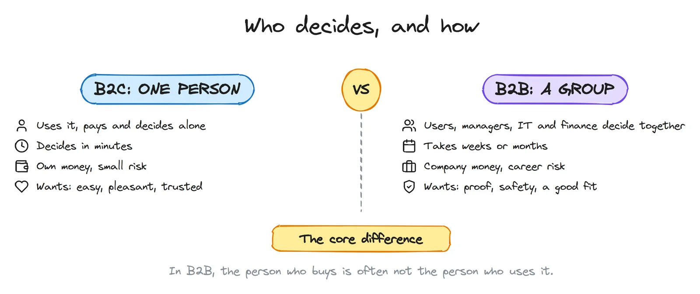
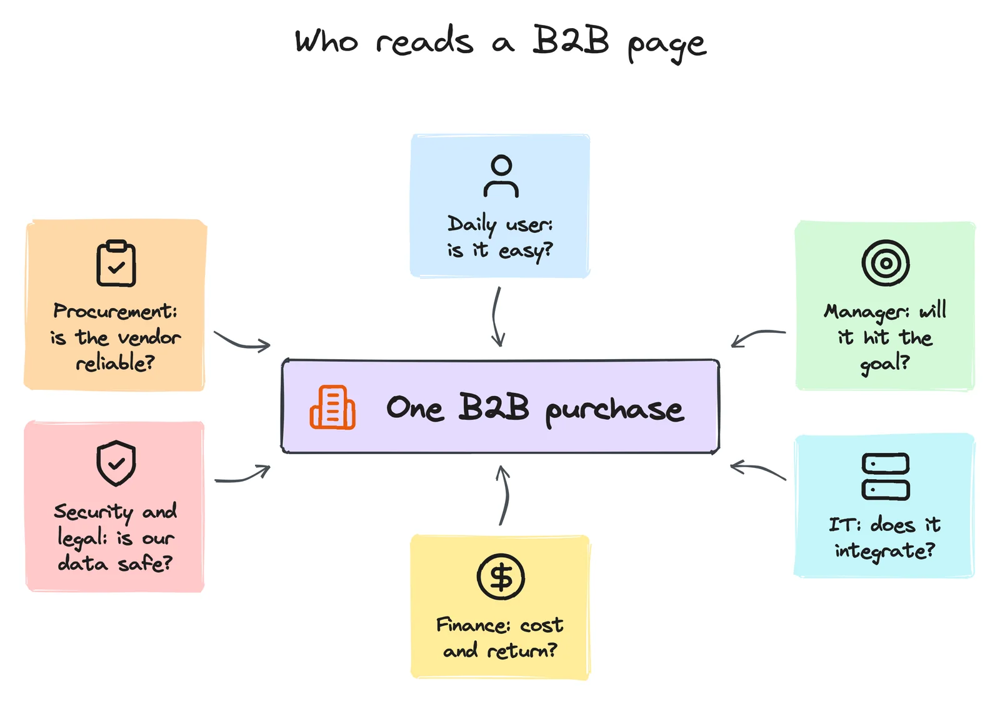
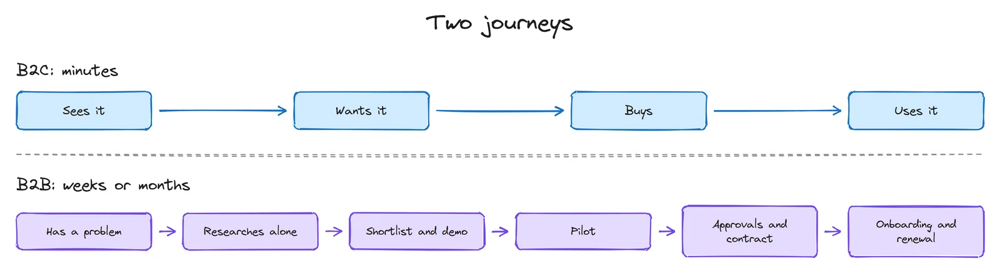
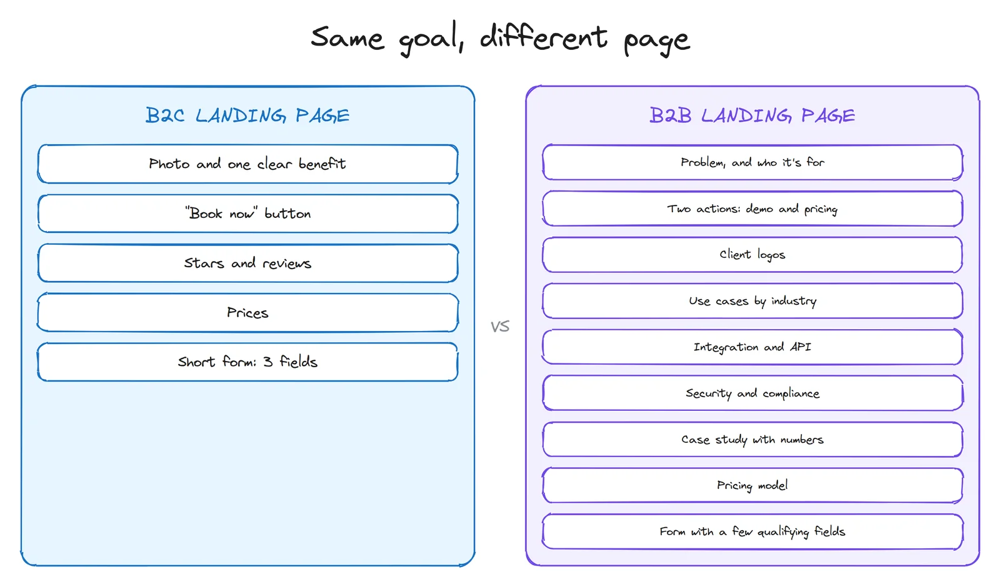
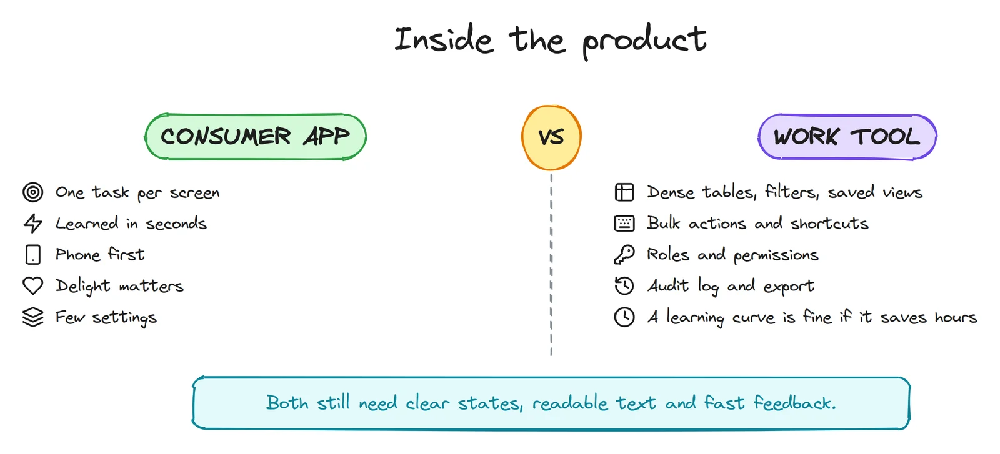
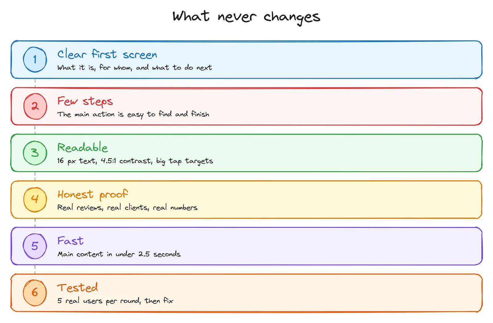

First, the two words
- B2C (business to consumer): a company sells to a person. A food delivery app, an online shop, a clinic's booking page for patients.
- B2B (business to business): a company sells to another company. Accounting software, a CRM, an SMS platform for banks, a website built for a clinic.
I work on both sides. I design and run ritorica.com, the website of a B2B messaging company whose clients are banks, online shops and other businesses. And I build booking pages for private clinics, where the person on the screen is a patient. The same clinic is also a good example of both at once: the patient's booking page is B2C, but my proposal to the clinic owner is B2B. I'll come back to that.
Tip: on a phone, tap any sketch to open it full size.
The one difference that explains the rest: who decides

In B2C, if the page is clear and the price feels fair, the person buys. If not, they close the tab. The whole decision happens in one head, often in one visit.
In B2B, Gartner's research says a typical buying group for a complex purchase has six to ten people, and that buyers spend only about 17% of the buying process talking to potential suppliers. The rest of the time they research on their own and argue among themselves. So your site, your documents and your demo have to work while you're not in the room.
The fear is different too. A bad B2C purchase costs someone a few thousand rubles and an annoyed evening. A bad B2B purchase can cost someone their job. B2B design is largely about reducing the risk of saying yes.
One B2B page, six readers

Each person in the group opens your site with a different question, and leaves if they can't find their answer:
| Who | Asks | Looks for on your site |
|---|---|---|
| Daily user | Will this make my day easier? | Screenshots, a demo, a free trial, how it works |
| Manager | Will it hit our numbers? | Case studies with results, use cases for their industry |
| IT / developer | Does it fit our systems? | API docs, integrations, technical specs, uptime |
| Finance | What does it cost, and when does it pay back? | A pricing model, a calculator, what's included |
| Security and legal | Is our data safe? Is it legal? | Where data is stored, certificates, licences, contract terms |
| Procurement | Is this vendor real and stable? | Company details, years in business, client logos, contacts |
A B2C page talks to one person. A B2B site needs a clear path for each of these readers: a "for developers" page, a "security" page, a pricing page, case studies by industry. Not all on the home page, but all one click away.
Two journeys, two timelines

In B2C, design mostly serves one moment: the decision. Remove friction, show the price, make the button obvious.
In B2B, there are many moments, and each needs its own material:
- Research alone: pages that answer questions without a call. If the only answer is "contact us", many buyers simply move to the next vendor on their list.
- Shortlist and demo: something the champion can forward to colleagues: a one-page PDF, a short video, a comparison table.
- Pilot: a small, safe first step with a clear success measure. "Try it on one scenario for 30 days" is easier to approve than "move everything to us".
- Approvals: the security, legal and finance answers, ready before they're asked.
- Onboarding and renewal: the product itself. In B2B the sale isn't over at the contract. If the team doesn't adopt it, they don't renew.
The landing page: same goal, different page

| Element | B2C | B2B |
|---|---|---|
| Headline | The benefit, in everyday words | The problem you solve, and for whom (industry, size, role) |
| Main action | Buy, book, sign up: now | See a demo, see pricing, start a pilot, calculate savings. Offer two: one for "talk to a person", one for "let me look myself" |
| Proof | Star ratings, reviews, real photos | Client logos, case studies with numbers, licences, certificates, uptime |
| Price | Shown, simple, final | Often depends on volume, but show the model, the tiers or a "from" price. "Price on request" alone loses people |
| Depth | Short. Every extra line costs attention | Long is fine if it's organised: specs, docs, security, FAQ, PDFs to forward |
| Form | As short as possible: often name and phone | A few qualifying fields are fine (company, volume), but only the ones sales actually uses |
| Navigation | By product or category | By industry, by role, by use case, plus a clear "for developers" path |
| Tone | Warm, personal, sometimes playful | Precise and calm. No hype: buyers have to repeat your claims to their boss |
One B2B rule I follow on ritorica.com: every claim should survive being forwarded. A marketing manager will paste your sentence into a message to their director. "The best platform" dies there. "Direct connections to mobile operators" survives, because it's a fact someone can check.
Inside the product: consumer app vs work tool

For a consumer app, "simple" means anyone can use it the first time, on a phone, in a hurry. For a work tool, "simple" means a person who uses it eight hours a day can do their job with the fewest clicks. Those lead to very different screens.
- Density is a feature in B2B. An operator comparing 200 orders wants a table with many columns, filters, sorting and saved views, not one big card per screen. Make dense screens readable with spacing, alignment and clear column headers, not by hiding data.
- Speed for experts: keyboard shortcuts, bulk actions ("mark 50 as paid"), search everywhere, remembered filters.
- Roles and permissions: who can see prices, who can export, who can delete. Design the admin screens too; they're part of the product.
- Trust features: an audit log (who changed what, when), exports, clear error messages that say what to do. In B2B, an unclear error becomes a support ticket, and a support ticket costs money.
- Onboarding: B2C onboarding has seconds. B2B onboarding can be a checklist over the first week, with sample data, so the team reaches the first real result quickly.
One warning: "it's for work, so it can be ugly" is wrong. People at work use banking and taxi apps at home, and they compare. Jakob's law applies here too: users expect your tool to work like the tools they already know.
Research is different too
| B2C | B2B | |
|---|---|---|
| Users | Many, easy to find | Few, busy, hard to reach |
| Who to interview | People who match the persona | One person per role: user, manager, IT, finance |
| How to recruit | Social media, friends of friends, a small reward | Through sales and support, with the client's permission |
| Best free data | Analytics, reviews, app store comments | Sales call notes, lost-deal reasons, support tickets |
| Test sessions | Quick tasks with strangers | Real tasks with real (or realistic) data, ideally at their desk |
| What you measure | Conversion, bookings, cart abandonment, retention | Qualified leads, demo-to-pilot, pilot-to-contract, time to first result, task time, renewals |
Two B2B-specific habits pay off fast. Ask sales for the three questions every prospect asks, and put the answers on the site. And read the reasons for lost deals: they're usually a design brief in disguise ("couldn't find the API docs", "security team said no").
One clinic, both sides
Here is how this plays out in my clinic work.
The patient's booking page is B2C. One person, usually on a phone, often in pain or worried. So: a booking button on the first screen, three fields, no captcha, prices next to services, real reviews. They decide in a minute.
My proposal to the clinic owner is B2B. The owner is the buyer, but the administrator will use the system every day, and sometimes a partner or a manager has a say. So the proposal is designed to reduce the risk of saying yes:
- It starts with their own site: what I found on it, with screenshots, not a generic pitch.
- It shows the value as an estimate in rubles on their own prices, clearly labelled as an estimate.
- It includes a demo they can tap, so the owner and the administrator can both try it.
- It offers a small first step (online booking and a messenger bot on the current site) before a big one (a new website).
- It states the price, so nobody has to ask.
Same clinic, same goal (more patients booked), two completely different designs, because the person deciding is different.
What never changes

Under all the differences, the basics from my UI/UX from zero post apply to both: a first screen that says what it is, few steps to the main action, readable text and contrast, real proof instead of claims, a fast page, and a test with five real people before you call it done.
The mistakes I see most
On B2B sites
- "Contact us" as the only answer. No prices, no docs, no screenshots. Buyers who research alone skip you.
- Marketing words, no facts. "Innovative", "best in class", "seamless". None of it can be forwarded to a director or checked by IT.
- Designing only for the buyer. The director signs, but if the daily user hates the tool, the contract isn't renewed.
- A ten-field form for a demo, half of which nobody at the company reads.
- No path for developers. The technical person is often the one who says no, quietly.
On B2C sites
- Copying B2B depth. Walls of text and spec tables where a person wanted a price and a button.
- Asking for an account before showing any value.
- Fake urgency. Countdown timers and "only 2 left" that are always there. People notice, and trust drops.
- Hidden prices. In consumer services, a price learned only at the end is a classic reason for a bad review.
A 5-minute check for your own site
- Who decides? One person, or a group? If a group, list the roles.
- For each role, open your site and try to find their answer in two clicks. Note where you get stuck.
- Look at your main button. Does it match how ready your visitor is? "Buy now" for a 6-month B2B decision is too early; "Request a quote" for a 500-ruble product is too slow.
- Read your headline aloud as if forwarding it to a boss (B2B) or saying it to a friend (B2C). Does it survive?
- Check the price. Can a visitor at least understand how you charge?